# Libraries
import pandas as pd
import numpy as np
import matplotlib.pyplot as plt
import seaborn as sns
# Path
path = "~/Downloads/"Lab 1 - EDA & Visualization Assignment
Setup
Libraries & Paths
Python
R
# Libraries
library(readr)
library(ggplot2)
library(corrplot)
# Path
path <- "~/Downloads/"Data Loading and Dictionary Alignment
Reading in file and reviewing data
Python
# Read in
approval_data = pd.read_csv(path + "credit_card_approvals_2025.csv")
# Display feature types
approval_data.info() <class 'pandas.core.frame.DataFrame'>
RangeIndex: 690 entries, 0 to 689
Data columns (total 16 columns):
# Column Non-Null Count Dtype
--- ------ -------------- -----
0 Gender 690 non-null object
1 Age 690 non-null int64
2 Debt 690 non-null int64
3 Married 690 non-null int64
4 BankAccount 690 non-null int64
5 Industry 690 non-null object
6 Ethnicity 690 non-null object
7 YearsEmployed 690 non-null float64
8 PriorDefault 690 non-null int64
9 Employed 690 non-null int64
10 CreditScore 690 non-null int64
11 DriversLicense 690 non-null int64
12 Citizen 690 non-null object
13 ZipCode 690 non-null int64
14 Income 690 non-null int64
15 Approved 690 non-null int64
dtypes: float64(1), int64(11), object(4)
memory usage: 86.4+ KBR
# Read in
approval_data <- read.csv(paste0(path, "credit_card_approvals_2025.csv"))
# Display feature types
str(approval_data)'data.frame': 690 obs. of 16 variables:
$ Gender : chr "Male" "Female" "Female" "Male" ...
$ Age : int 31 59 25 28 20 32 33 23 54 43 ...
$ Debt : int 0 29705 3230 10267 34416 24933 6540 76125 3185 29829 ...
$ Married : int 1 1 1 1 1 1 1 1 0 0 ...
$ BankAccount : int 1 1 1 1 1 1 1 1 0 0 ...
$ Industry : chr "Industrials" "Materials" "Materials" "Industrials" ...
$ Ethnicity : chr "White" "Black" "Black" "White" ...
$ YearsEmployed : num 1.25 3.04 1.5 3.75 1.71 ...
$ PriorDefault : int 1 1 1 1 1 1 1 1 1 1 ...
$ Employed : int 1 1 0 1 0 0 0 0 0 0 ...
$ CreditScore : int 1 6 0 5 0 0 0 0 0 0 ...
$ DriversLicense: int 0 0 0 1 0 1 1 0 0 1 ...
$ Citizen : chr "ByBirth" "ByBirth" "ByBirth" "ByBirth" ...
$ ZipCode : int 98370 60988 10239 69803 87131 11935 14942 27156 31725 50682 ...
$ Income : int 55473 74651 61949 63459 64622 74491 64507 80960 72688 65933 ...
$ Approved : int 1 1 1 1 1 1 1 1 1 1 ...Questionable encodings
Looking at the dataset, I can compare it to the list given in the instructions. An initial thought was that the binary variables, such as approved, should be stored as Boolean values. However, I determined that it does not make a significant difference if the instructions specify they are stored as numbers. I was also initially confused by the credit score scaling, but I have found that to be typical. The one problem I noticed was with ZIP code. ZIP codes have the possibility of starting with a zero and also potentially having dashes and extra numbers. These integer values will never be used with arithmetic. For these two reasons, I have decided to make ZIP code a string type.
Performing Coercions
Python
# Replace with string conversion
approval_data['ZipCode'] = approval_data['ZipCode'].astype('string')R
# Replace with char conversion
approval_data$ZipCode <- as.character(approval_data$ZipCode)Data Completeness
Dimensions of the dataset
Python
approval_data.shape(690, 16)R
dim(approval_data)[1] 690 16Missing values check
Python
# Sum of nulls in each feauture
int(approval_data.isnull().sum().sum())0R
# Number of nulls for each feature
colSums(is.na(approval_data)) Gender Age Debt Married BankAccount
0 0 0 0 0
Industry Ethnicity YearsEmployed PriorDefault Employed
0 0 0 0 0
CreditScore DriversLicense Citizen ZipCode Income
0 0 0 0 0
Approved
0 Confirming data completion
Considering data completion is always important. For example, it is highly possible that someone would prefer not to disclose the debt that they are in. This could be because it is private or because that number is somewhat hard to define. Omissions like that could have serious effects on the set, so it is never a good idea to assume data completion.
Descriptive Statistics
Summary of features
Python
approval_data.describe(include='all') Gender Age Debt ... ZipCode Income Approved
count 690 690.000000 690.000000 ... 690 690.000000 690.000000
unique 2 NaN NaN ... 170 NaN NaN
top Male NaN NaN ... 36129 NaN NaN
freq 480 NaN NaN ... 145 NaN NaN
mean NaN 31.555072 30794.589855 ... NaN 62661.528986 0.444928
std NaN 11.858650 32486.712519 ... NaN 12637.798876 0.497318
min NaN 14.000000 0.000000 ... NaN 30427.000000 0.000000
25% NaN 23.000000 6367.000000 ... NaN 53594.250000 0.000000
50% NaN 28.000000 18067.500000 ... NaN 60935.500000 0.000000
75% NaN 38.000000 46882.250000 ... NaN 70002.750000 1.000000
max NaN 80.000000 191230.000000 ... NaN 109589.000000 1.000000
[11 rows x 16 columns]R
summary(approval_data) Gender Age Debt Married
Length:690 Min. :14.00 Min. : 0 Min. :0.0000
Class :character 1st Qu.:23.00 1st Qu.: 6367 1st Qu.:1.0000
Mode :character Median :28.00 Median : 18068 Median :1.0000
Mean :31.56 Mean : 30795 Mean :0.7609
3rd Qu.:38.00 3rd Qu.: 46882 3rd Qu.:1.0000
Max. :80.00 Max. :191230 Max. :1.0000
BankAccount Industry Ethnicity YearsEmployed
Min. :0.0000 Length:690 Length:690 Min. : 0.000
1st Qu.:1.0000 Class :character Class :character 1st Qu.: 0.165
Median :1.0000 Mode :character Mode :character Median : 1.000
Mean :0.7638 Mean : 2.223
3rd Qu.:1.0000 3rd Qu.: 2.625
Max. :1.0000 Max. :28.500
PriorDefault Employed CreditScore DriversLicense
Min. :0.0000 Min. :0.0000 Min. : 0.0 Min. :0.000
1st Qu.:0.0000 1st Qu.:0.0000 1st Qu.: 0.0 1st Qu.:0.000
Median :1.0000 Median :0.0000 Median : 0.0 Median :0.000
Mean :0.5232 Mean :0.4275 Mean : 2.4 Mean :0.458
3rd Qu.:1.0000 3rd Qu.:1.0000 3rd Qu.: 3.0 3rd Qu.:1.000
Max. :1.0000 Max. :1.0000 Max. :67.0 Max. :1.000
Citizen ZipCode Income Approved
Length:690 Length:690 Min. : 30427 Min. :0.0000
Class :character Class :character 1st Qu.: 53594 1st Qu.:0.0000
Mode :character Mode :character Median : 60936 Median :0.0000
Mean : 62662 Mean :0.4449
3rd Qu.: 70003 3rd Qu.:1.0000
Max. :109589 Max. :1.0000 Key insights
After analyzing these data summaries, two in particular are notable to me. Age has a high maximum (80), and the third quarter is less than half of the maximum. This makes sense because the mean is likely very dense around 30 (typical first big purchase age). The Years Employed distribution is initially surprising, but it confirms the reality of temporary jobs. The third quarter being less than three is certainly lower than my expectation, which might be the result of certain industries.
Histograms
Histogram and density of age
Python Histogram
plt.hist(approval_data['Age'])
plt.ylabel('Frequency')
plt.xlabel('Age')
plt.show()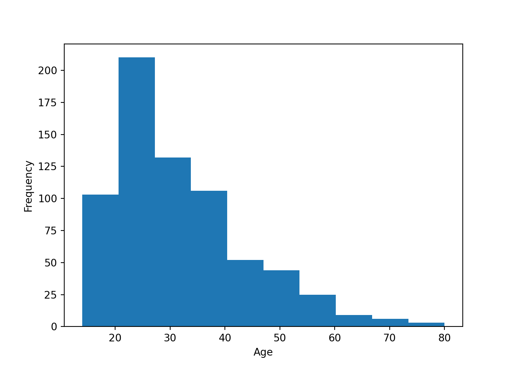
R Histogram
ggplot(data=approval_data) +
geom_histogram(aes(x=Age), binwidth = 8) +
theme_classic()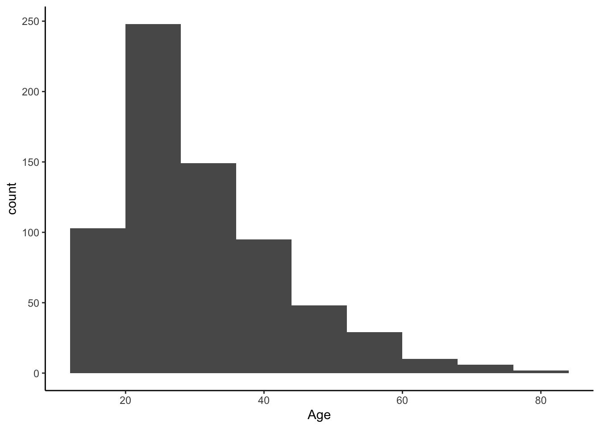
Python Density
sns.kdeplot(data=approval_data, x='Age', fill=False)
plt.show()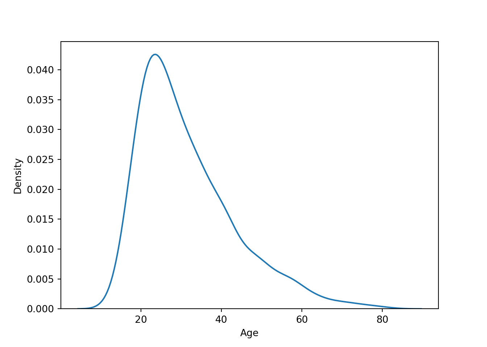
R Density
ggplot(approval_data, aes(x=Age, y=after_stat(density))) +
geom_density() +
theme_classic()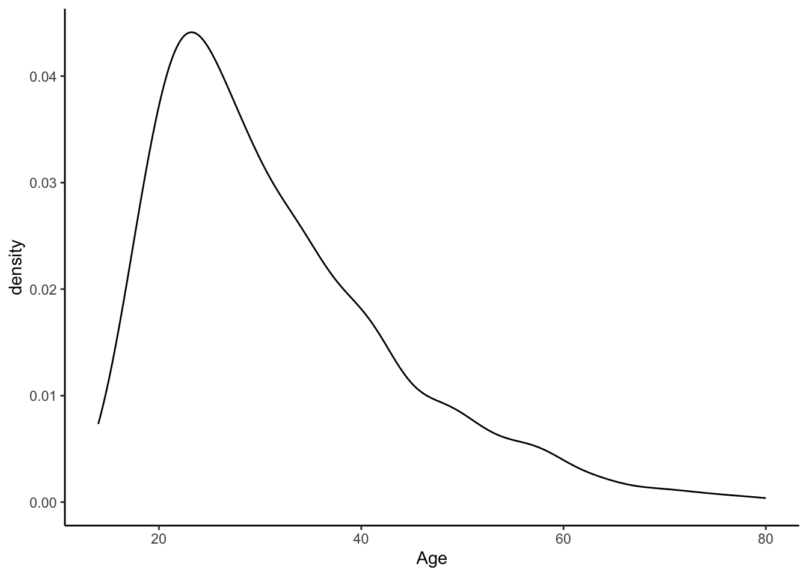
Bin-width effect
The argument binwidth has a large potential to impact the final visual. Simply adjusting the binwidth by one or two can overinflate or underinflate the visual representation of a certain subgroup. So it is important to keep the binwidth high. However, in this example, people tend to be familiar with grouping by tens (“twenties” and “thirties”), so just under 10 is the most appropriate.
Histogram and density of debt, with mean line
Python
sns.histplot(data=approval_data, x='Debt', kde=True)
plt.axvline(x=np.mean(approval_data['Debt']), color='yellow', linestyle='dotted')
plt.show()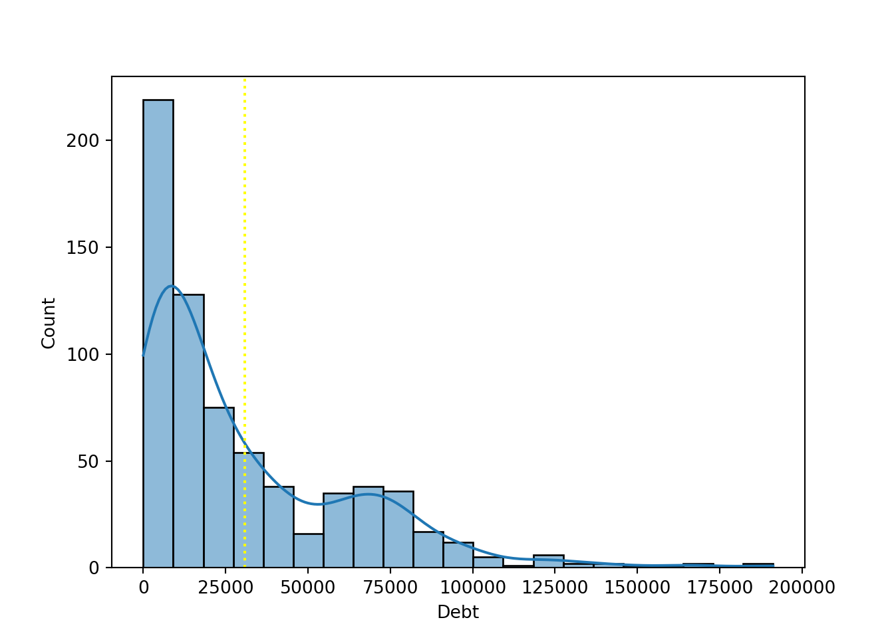
R
ggplot(approval_data, aes(x = Debt, y=after_stat(density))) +
geom_histogram(binwidth = 10000) +
geom_density() +
geom_vline(xintercept = mean(approval_data$Debt, na.rm = TRUE),
color = "orange", linetype = "dotted", linewidth = 1) +
theme_classic()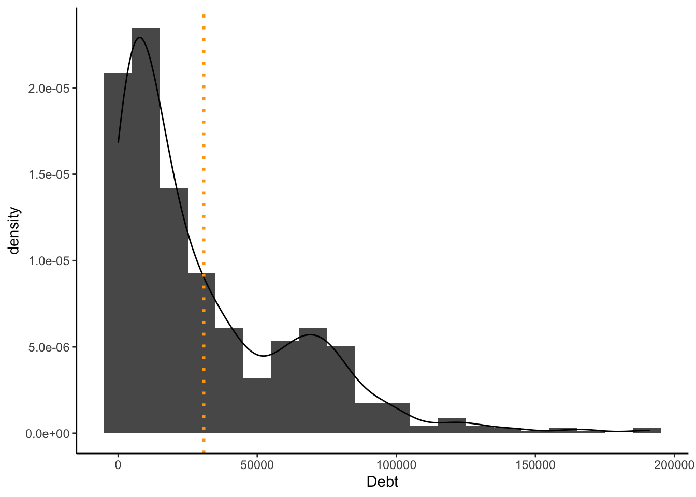
Use of descriptive Statistics
It is my belief that the mean is a meaningful addition to these plots. Since there is an atypical distribution, it is helpful to see where the average is. If we considered another descriptive statistic such as mode, this would not be as effective because there is such an intense variety of values. The mean provides a more honest story by representing the average person, not the most common (extremely specific) value.
Scatterplot
Create a scatterplot, debt (x-axis) and income (y-axis), trend line
Python
sns.regplot(x="Debt", y="Income", data=approval_data, scatter_kws={"alpha":0.6})
plt.show()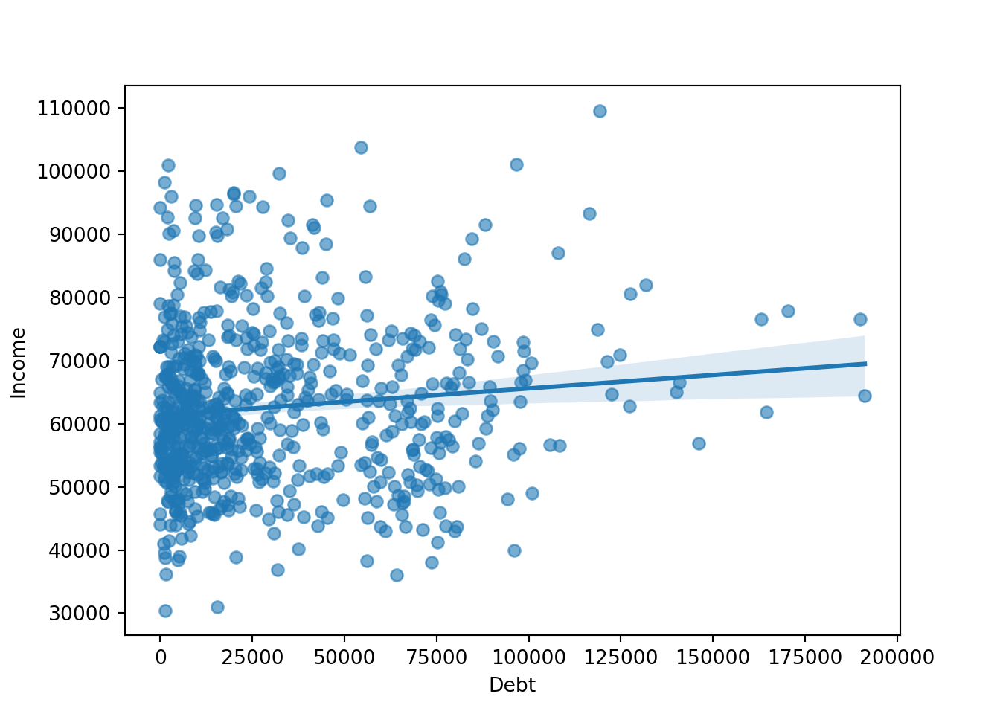
R
ggplot(approval_data, aes(Debt, Income))+
geom_point() +
geom_smooth(method = "lm", color="orange") + # Trend line
theme_classic()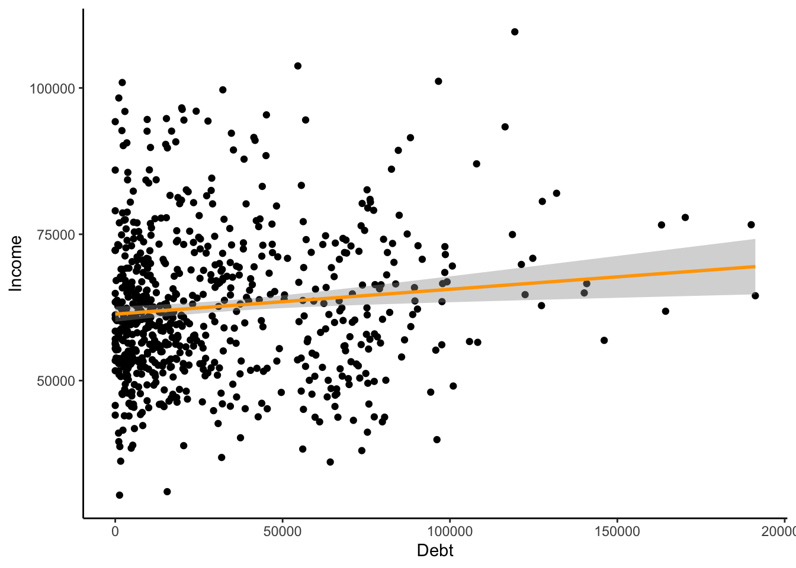
Interpreting outliers
With scatterplots, it is easier to notice outliers in the data. Histograms are not necessarily regular and uniform, so this makes it more difficult to notice outliers. However, I would note that the participant with $110,000 as their income and $120,500 as their debt is a bit of an outlier. Particularly considering that this participant has the highest income of the entire set and also is in the top 25% of debt. However, this does not conflict with financial logic, and I do not believe it to be an error. They might influence the approval process by showing that high income does not necessarily mean the applicant has the highest financial skills.
Horizontal Bar Plot
Visualizing industry by ethnicity
Python
sns.countplot(data=approval_data, y='Industry', hue='Ethnicity', dodge=False)
plt.show()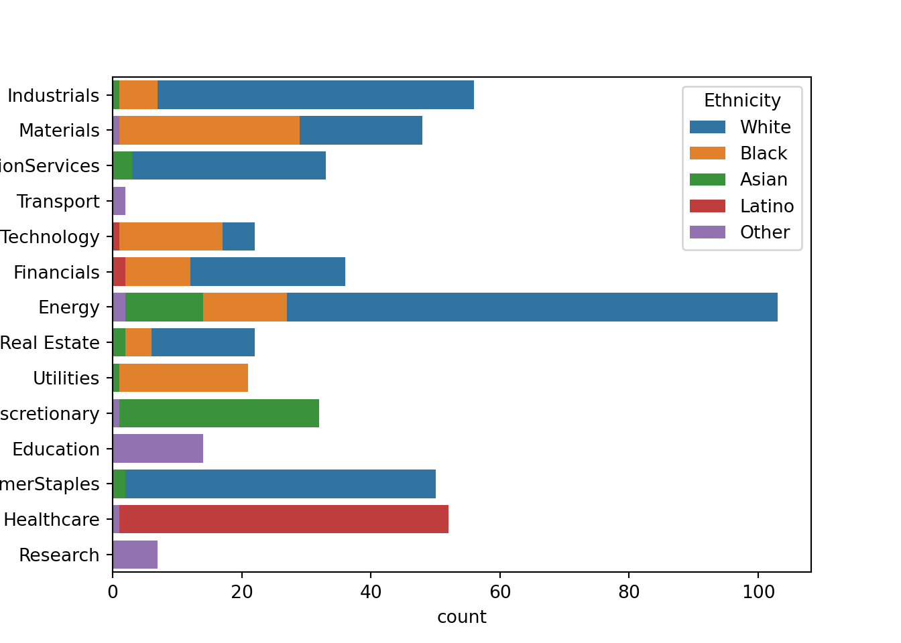
R
ggplot(approval_data, aes(x=Industry, fill=Ethnicity)) +
geom_bar() +
coord_flip() +
theme_classic()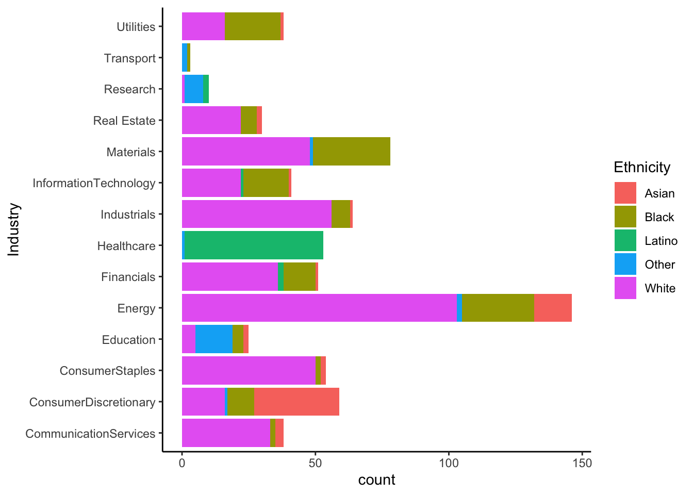
Reflection
When viewing these plots, there are a few industries that are notable to me. Research, transport, and education are majority proportions of unlisted ethnicity. This could point to a structural bias in the data, seeing that certain ethnicities should have been included in the survey. Healthcare is another industry that could likely be suffering from sampling bias.
Approval Bar Plots
Stacked bar plot, number of approvals/disapprovals (y-axis) by ethnicity (x-axis)
Python
pd.crosstab(approval_data['Ethnicity'], approval_data['Approved']).plot(kind='bar', stacked=True)
plt.tight_layout()
plt.show()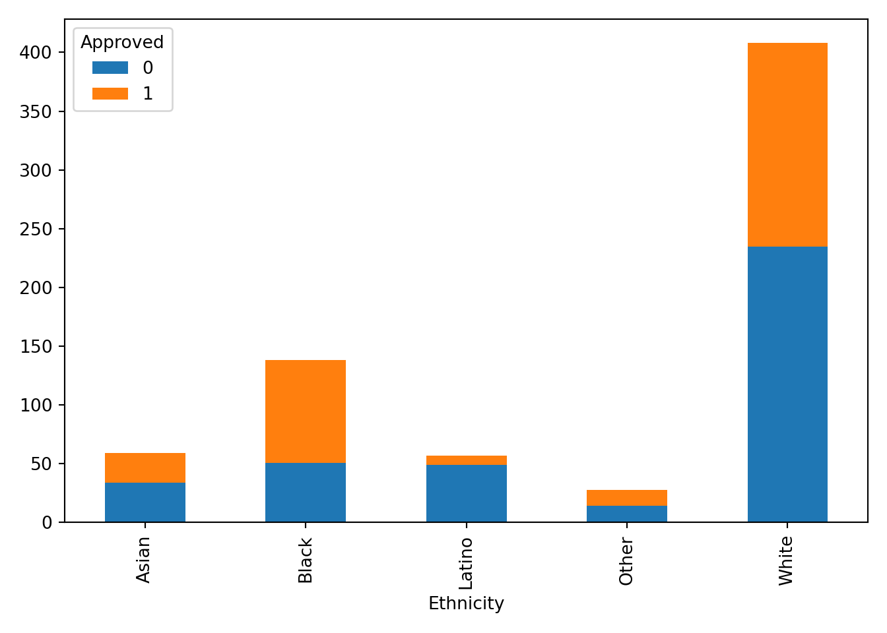
R
ggplot(approval_data, aes(x=Ethnicity, fill = Approved, group = Approved)) +
geom_bar(position = "stack") +
theme_classic()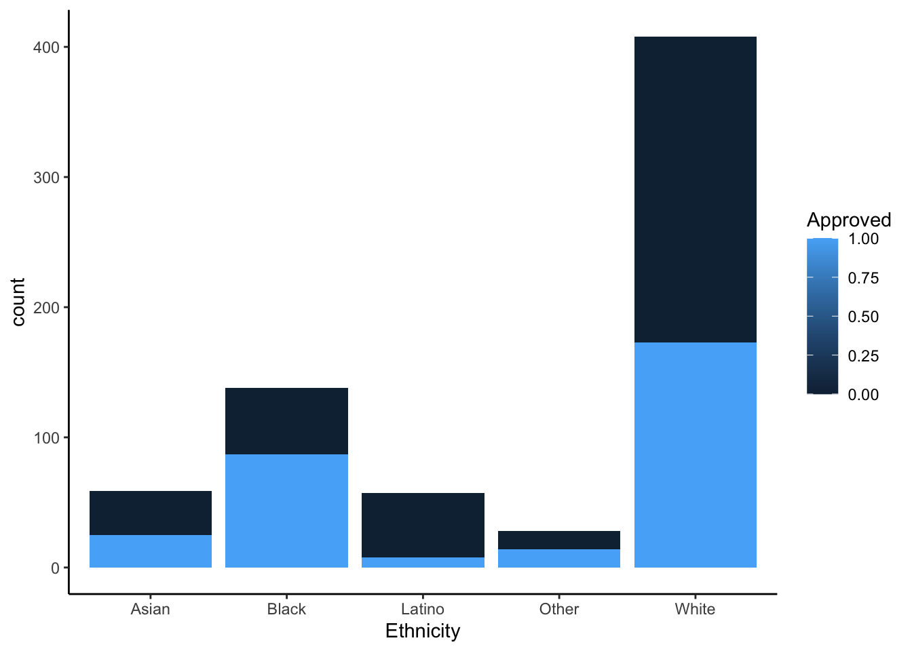
Bar plot same orientation and axes but unstacked
Python
pd.crosstab(approval_data['Ethnicity'], approval_data['Approved']).plot(kind='bar', stacked=False)
plt.tight_layout()
plt.show()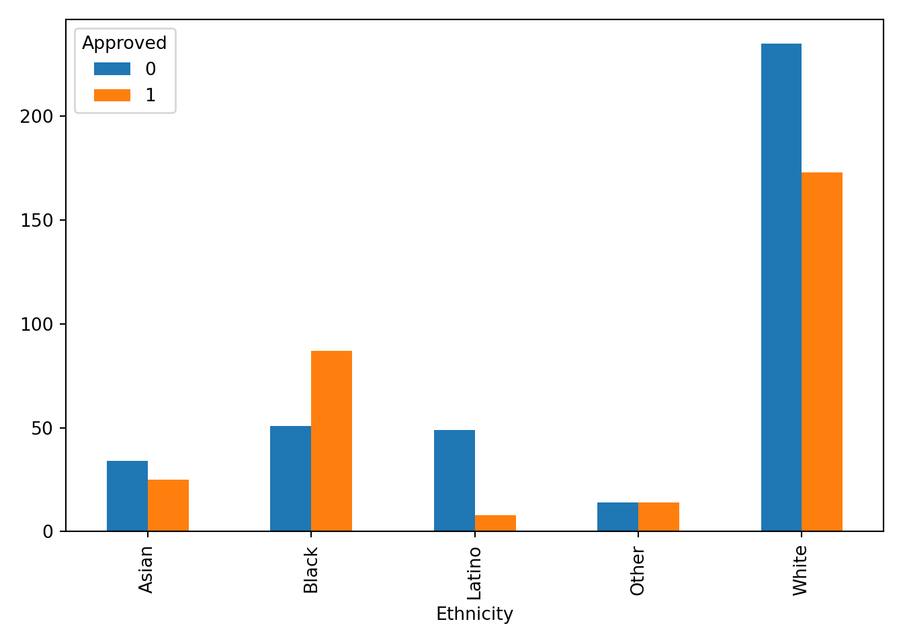
R
ggplot(approval_data, aes(x=Ethnicity, fill = Approved, group = Approved)) +
geom_bar(position = "dodge") +
theme_classic()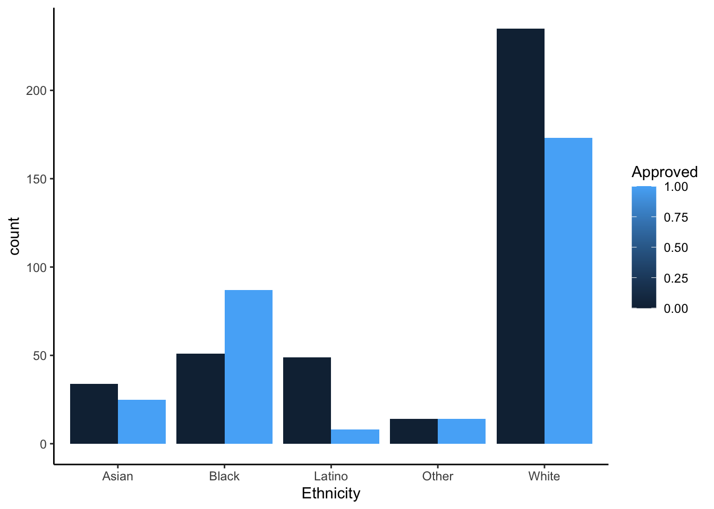
Insights
Each chart provides value and insight in many ways. The stacked effects are helpful for the viewer to recognize the entire population in comparison to an ethnicity rather than approval to approval. It gives the eye an easier time looking at the entire graph. The unstacked graphs help to compare the approval frequency of each ethnicity. This visual decision is helpful for the viewer to understand how far from 50% (equal bars) the approval rating is for each ethnicity. The Latino ethnicity seems to be experiencing the most disparity for approval. As mentioned in the previous section, there may be some sampling bias that surveyed participants in this ethnicity from a very limited number of industries (in this case healthcare). We would need context on how the sampling was done, but without this context I do not believe it would be responsible to build a model based on this data.
Box Plots
Box plot of debt (y-axis) against industry (x-axis) and save the graph
Python
sns.boxplot(data=approval_data, x='Debt', y='Industry')
plt.savefig('debt_industry_py.png')
plt.show()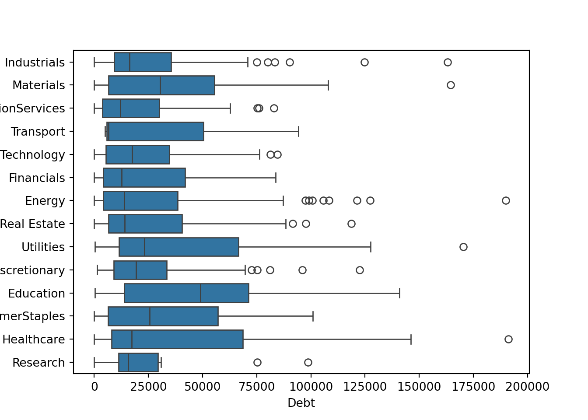
R
ggplot(approval_data, aes(x=Industry, y=Debt)) +
geom_boxplot() +
theme(axis.text.x = element_text(angle=-90, hjust=0, vjust=0)) 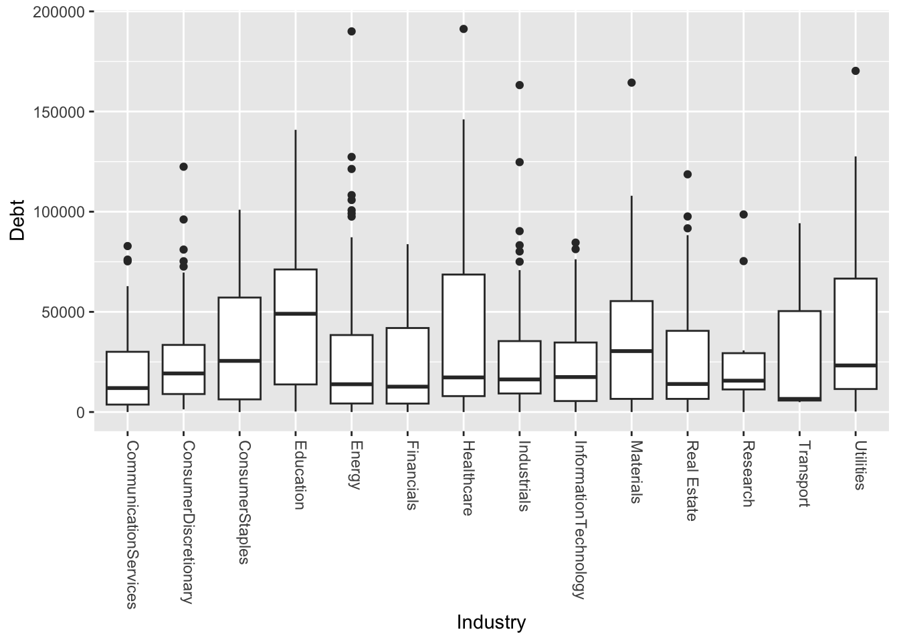
ggsave("debt_industry_r.png", width=5, height=8)Box plot of debt (y-axis) against industry (x-axis), save file
Python
sns.boxplot(data=approval_data, x='YearsEmployed', y='Industry')
plt.savefig('employed_industry_py.png')
plt.show()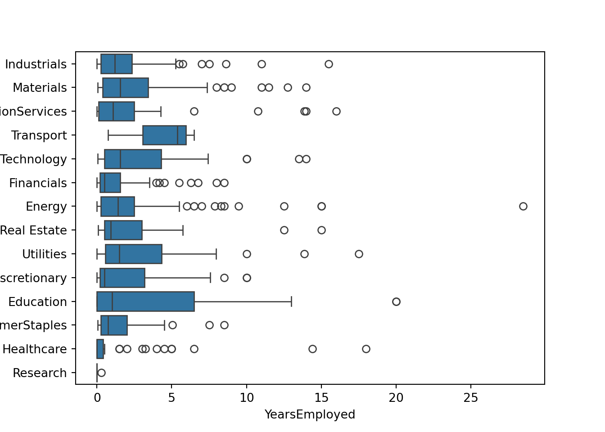
R
ggplot(approval_data, aes(x=Industry, y=YearsEmployed)) +
geom_boxplot() +
theme(axis.text.x = element_text(angle=-90, hjust=0, vjust=0)) 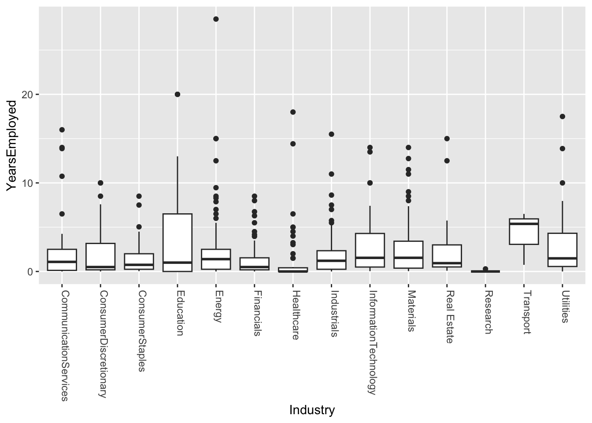
ggsave("employed_industry_r.png", width=5, height=8)Variability comments
From these graphs it is clear to me that there is high enough variability that I would not believe this to be as effective as other categories in making an approval model. From this I can gather that there is a strong reality that even within certain industries there are different sub-industries and jobs that are very different from one another. So I do not believe it would be fair to gauge credit worthiness based on a limited number of industries.
Additional Plots
Correlation Matrix (numeric)
My goal was to see which numeric values where most affected by one another.
# Create modidified DF including only numeric features
num_approval_data = approval_data.select_dtypes(include=['number'])
corr_approval_data = num_approval_data.corr()
sns.heatmap(corr_approval_data, annot=False, cmap="magma")
plt.show()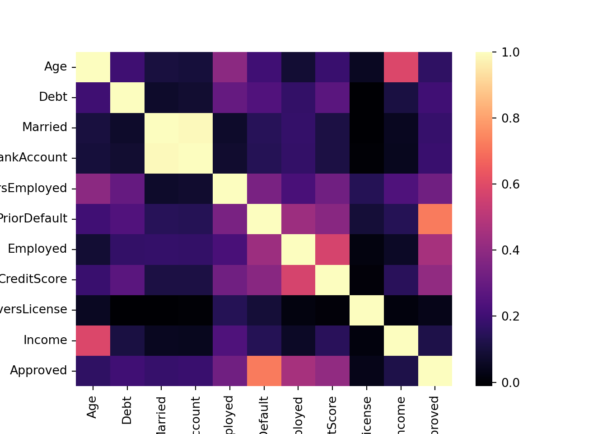
# Create modidified DF excluding non-numeric features
num_approval_data <- approval_data[, c("Age", "Debt", "Married",
"BankAccount", "YearsEmployed", "PriorDefault",
"Employed", "CreditScore", "DriversLicense",
"Income", "Approved")]
corr_approval_data <- cor(num_approval_data)
corrplot(corr_approval_data, method='color')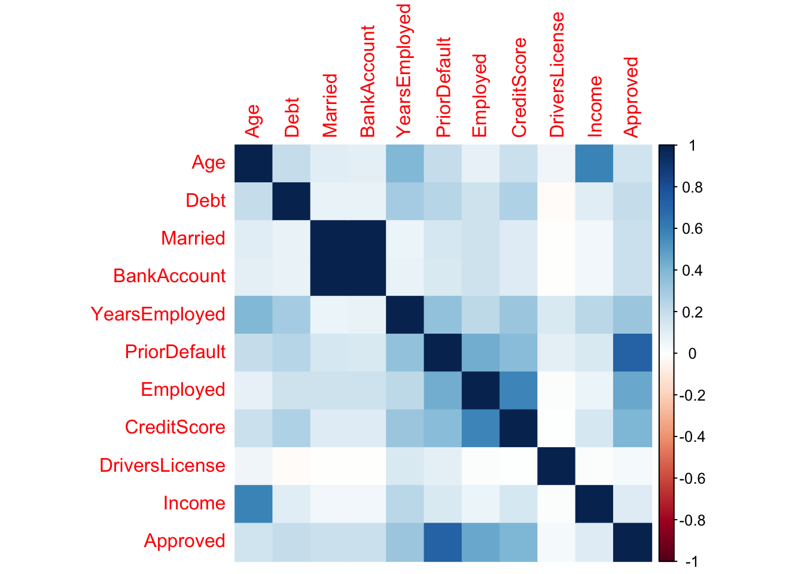
Insight
From this, I gathered that age and income are strongly correlated.
Gender affecting income violin plot (non-numeric)
My goal is to use the categorical feauture ‘Gender’ to find disparity in income.
Python
sns.violinplot(data=approval_data, x='Gender', y='Income')
plt.show()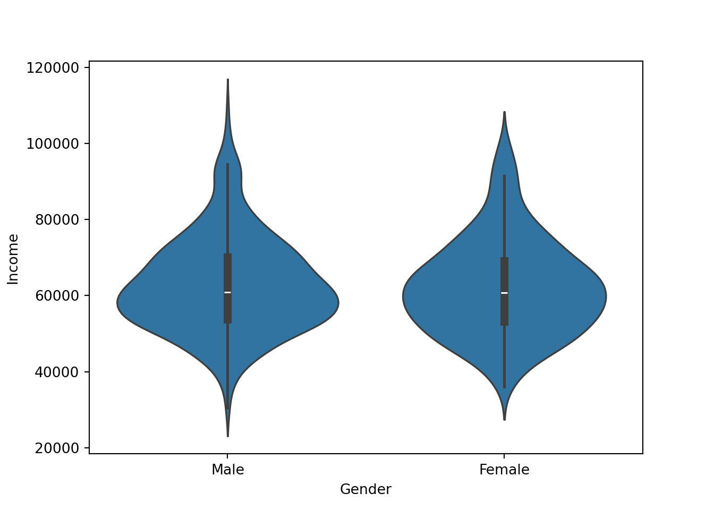
R
ggplot(approval_data, aes(x=Gender, y=Income)) +
geom_violin(fill = "cornflowerblue") +
stat_summary(geom = "point", color = "orange") +
theme_classic()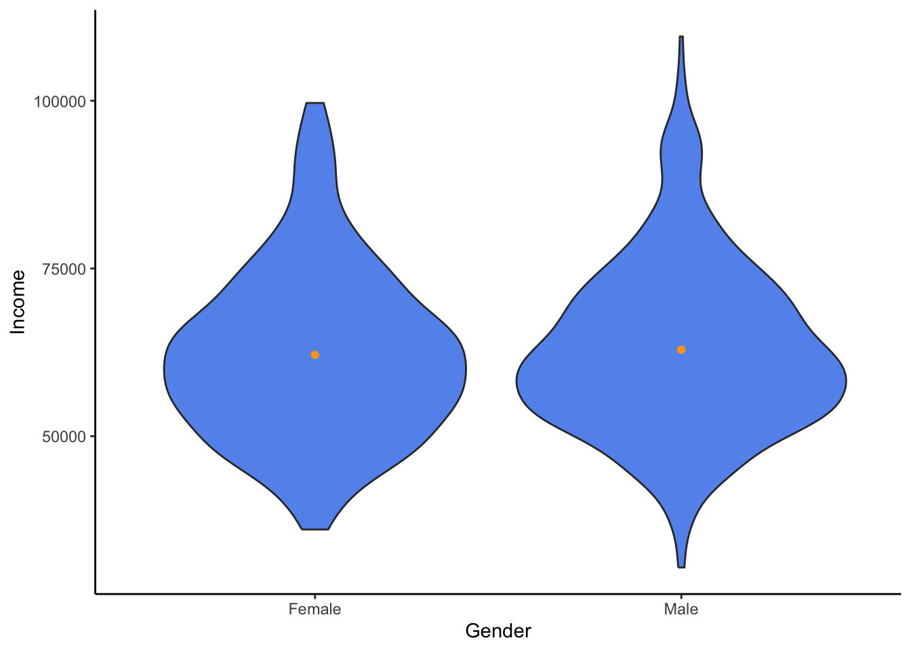
Insight
From this, I have gathered that even though males have a higher maximum, both genders appear surpisingly similar.
Final Summary & Reflection
Assumptions
I came into this analysis with minimal assumptions and values. However, some did shape what I was looking for. For example, I was most interested in how attributes that people had no control of (gender, ethnicity) play a role. I believe that a model should be trained on people’s decisions. So I was assuming that gender and ethnicity would play less of a role; however, I was proven somewhat wrong.
Fairness
I believe it is clear based on my prior analysis that some aspects of this dataset are too limited and in need of context to be used for modeling. As we could see with the ethnicity participants, there may have been some representational harm. Many applicants of a particular ethnicity might be highly affected by the majority industry of their ethnicity. This could affect fairness in a negative way.
Biblical Principles
Data visualization and presentation are becoming more and more scrutinized for their lack of credibility. There is a strong temptation to fall to the pressure of one’s superiors, investors, or anyone around them. That is why it is important to have biblical principles surrounding oneself to keep from these temptations. The verse in Micah calls us to realize that all are deserving of justice and kindness, so we should fight to stay away from unfairness. The verse in Genesis describes how we are all trusted by God to work and keep a responsibility. We should be thankful for what God has given us and work at it to the best of our ability. The Ephesians verse reminds us that even though there can sometimes be an uncountable number of participants, we must realize that we are all one in Christ and therefore all deserving of truth and fairness.